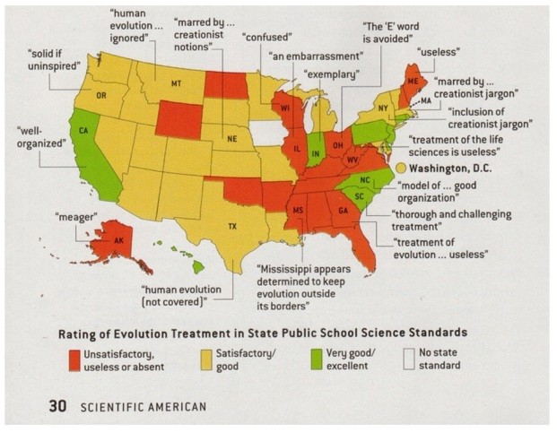

| Evolution in the News - May 2002 |
| by Do-While Jones |
Many people think that resistance to evolution is driven entirely by conservative religious doctrine. That doesn't seem to be the case if we are to believe the research by Lawrence S. Lerner of California State University at Long Beach. It is clear from the legends on his map (below) that he is certainly pro-evolution. On his map, green is "good" (evolutionary).
| His evaluation, summarized and updated in the map below, is valuable in part because it points up the widespread sway of creationists in Northern states, such as Illinois, Ohio, and Wisconsin, that have a liberal or moderate tradition. 1 |

The effect of standards on the content of textbooks cannot be over-emphasized. We occasionally get email asking us to recommend biology textbooks that treat evolution fairly, presenting both sides of the issue. There are very few publishers who are willing to publish such textbooks. That is because publishers know that if they don't present evolution the way the groups like the National Center for Science Education (which is actually the National Center for Science Censorship) want evolution presented, then public school boards won't adopt the textbook. That limits the market to home school teachers, which is a far smaller segment of the population. Since publishers won't publish balanced textbooks, science authors tend not to waste time writing them. That's why Of Pandas and People by Dean Kenyon is one of the very few books that present the theory of evolution completely and fairly.
The article then goes on to say,
| According to a 1999 poll taken by People for the American Way Foundation, a Washington D.C. based organization opposed to teaching of creationism in science classes, ... Only 37 percent expressed strong support for evolution-that is, teaching it to the exclusion of all religious doctrine in science classes. 3 |
Isn't that interesting? Notice the prejudicial way in which they define "strong support for evolution." Creationists, in general, aren't pushing for teaching religion in science classes. They just want to stop the suppression of scientific evidence against evolution. Actually, the theory of evolution is the creation myth of both the Secular Humanist and New Age religions, so there already is religious doctrine in science classes.
But the other thing to notice is that only 37 percent want biased presentation of the theory of evolution. The people who want all the scientific evidence for and against evolution presented outnumber those in favor of scientific censorship by almost two to one. We think that is pretty good news.
| In the absence of a majority favoring strict standards for evolution teaching, it is easy to see why creationists have been able to make headway even outside the circle of evangelical Christianity. In 1996 Pope John Paul II reaffirmed the Catholic Church's commitment to evolution, first stated in 1950, saying that his inspiration for doing so came from the Bible. Despite this, 40 percent of American Catholics in a 2001 Gallup poll said they believed that God created human life in the past 10,000 years. Indeed, fully 45 percent of all Americans subscribe to this creationist view. Many who are indifferent to conservative theology give creationism some support ... 4 |
Why don't the evolutionists believe their own data? They keep insisting that creationism has no other basis than slavish obedience to religious doctrines. But then they tell us that 40% of Catholics reject evolution even though the Pope himself is an evolutionist. If opposition to the theory of evolution is religiously motivated, why do many who are indifferent to conservative theology give creationism some support?
The answer, of course, is that this isn't a case of religion against evolution--it is a case of science against evolution.
There aren't very many green states (that is, states where evolutionists have strong control over the science curriculum) on the map. Surprisingly, Kansas is shown as yellow rather than red, and we all know how the people in Kansas feel about evolution. And yellow states like Nebraska, Massachusetts, and New York are "marred by creationist notions" or "creationist jargon" according to the map.
So, it looks like we are winning. Of course, if we weren't winning, they would not be putting up such a fuss.
| Quick links to | |
|---|---|
| Science Against Evolution Home Page |
Back issues of Disclosure (our newsletter) |
| Web Site of the Month |
Topical Index |
Footnotes:
1
Doyle, Scientific American, March 2002, "Down with Evolution!" page 30
(Ev+)
2
ibid.
3
ibid.
4
ibid.